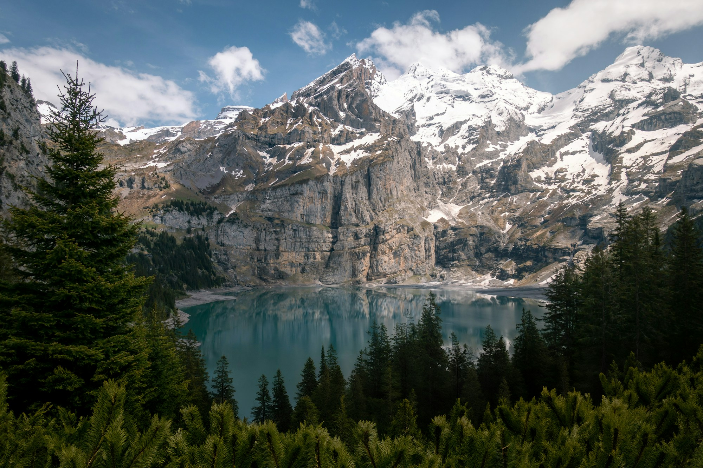

The Ridge
A two-person hideaway imagined above the tree line, with a reading nook and a sheltered deck.
Concept rate from ₹12,500 / night
Explore dates
Wake to the mountains. Stay for the quiet. A collection of imagined escapes with room to breathe.
Not a packed itinerary.
A little more possibility.
Fictional stays inspired by the great outdoors. Images show landscape inspiration.
A two-person hideaway imagined above the tree line, with a reading nook and a sheltered deck.
Concept rate from ₹12,500 / night
Explore datesA calm retreat for two beside the water, with space for slow breakfasts and long conversations.
Concept rate from ₹14,500 / night
Explore datesA larger cabin concept for four, with a shared table, a generous living space and room to reconnect.
Concept rate from ₹18,500 / night
Explore datesIllustrative testimonials · Fictional people and experiences, written for this concept website.
“The kind of quiet that makes you put your phone away without even thinking about it.”Nina, weekend wanderer · Sample review
“A long breakfast, a short walk, and no need to be anywhere else. Exactly our kind of escape.”Sam & Eli, slow travellers · Sample review
“The details felt simple in the best way. Everything you need, with room for the view.”Jules, mountain enthusiast · Sample review